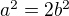
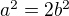
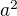
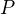
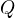

Logic and Proof
1 Introduction
1.1 Mathematical Proof
Although there is written evidence of mathematical activity in Egypt as early as 3000 BC, many scholars locate the birth of mathematics proper in ancient Greece around the sixth century BC, when deductive proof was first introduced. Aristotle credited Thales of Miletus with recognizing the importance of not just what we know but how we know it, and finding grounds for knowledge in the deductive method. Around 300 BC, Euclid codified a deductive approach to geometry in his treatise, the Elements. Through the centuries, Euclid's axiomatic style was held as a paradigm of rigorous argumentation, not just in mathematics, but in philosophy and the sciences as well.
Here is an example of an ordinary proof, in contemporary mathematical language. It establishes a fact that was known to the Pythagoreans.
Theorem.  is irrational, which is to say, it cannot be
expressed as a fraction , where
is irrational, which is to say, it cannot be
expressed as a fraction , where  and
and  are integers.
are integers.
Proof. Suppose  for some pair of integers and
. By removing any common factors, we can assume is in
lowest terms, so that and have no factor in common. Then , and squaring both sides, we have .
for some pair of integers and
. By removing any common factors, we can assume is in
lowest terms, so that and have no factor in common. Then , and squaring both sides, we have .
The last equation implies that  is even, and since the square of
an odd number is odd, itself must be even as well. We therefore
have for some integer  . Substituting this into the
equation , we have , and hence
. Substituting this into the
equation , we have , and hence  . This means that is even, and so is even as well.
. This means that is even, and so is even as well.
The fact that and are both even contradicts the fact that
and have no common factor. So the original assumption that is false.
In the next example, we focus on the natural numbers,
A natural number  greater than or equal to 2 is said to be
composite if it can be written as a product
greater than or equal to 2 is said to be
composite if it can be written as a product  where
neither
where
neither  nor
nor  is equal to
is equal to  , and prime otherwise. Notice that
if witnesses the fact that is composite, then
and are both smaller than . Notice also that, by convention, 0
and 1 are considered neither prime nor composite.
, and prime otherwise. Notice that
if witnesses the fact that is composite, then
and are both smaller than . Notice also that, by convention, 0
and 1 are considered neither prime nor composite.
Theorem. Every natural number greater than equal to 2 can be written as a product of primes.
Proof. We proceed by induction on . Let be any natural number
greater than 2. If is prime, we are done; we can consider
itself as a product with one term. Otherwise, is composite, and we
can write where and are smaller than and
greater than 1. By the inductive hypothesis, each of and can
be written as a product of primes, say
and
 But then we have
a product of primes, as required.
But then we have
a product of primes, as required.
Later, we will see that more is true: every natural number greater than 2 can be written as a product of primes in a unique way, a fact known as the fundamental theorem of arithmetic.
The first goal of this course is to teach you to write clear, readable mathematical proofs. We will do this by considering a number of examples, but also by taking a reflective point of view: we will carefully study the components of mathematical language and the structure of mathematical proofs, in order to gain a better understanding of how they work.
1.2 Symbolic Logic
Towards understanding how proofs work, it will be helpful to study a subject known as "symbolic logic," which provides an idealized model of mathematical language and proof. In the Prior Analytics, the ancient Greek philosopher set out to analyze patterns of reasoning, and developed the theory of the syllogism. Here is one instance of a syllogism:
Every man is an animal.
Every animal is mortal.
Therefore every man is mortal.
Aristotle observed that the correctness of this inference has nothing to do with the truth or falsity of the individual statements, but, rather, the general pattern:
Every A is B.
Every B is C.
Therefore every A is C.
We can substitute various properties for A, B, and C; try substituting the properties of being a fish, being a unicorn, being a swimming creature, being a mythical creature, etc. The various statements that result may come out true or false, but all the instantiations will have the following crucial feature: if the two hypotheses come out true, then the conclusion comes out true as well. We express this by saying that the inference is valid.
Although the patterns of language addressed by Aristotle's theory of reasoning are limited, we have him to thank for a crucial insight: we can classify valid patterns of inference by their logical form, while abstracting away specific content. It is this fundamental observation that underlies the entire field of symbolic logic.
In the seventeenth century, Leibniz proposed the design of a characteristica universalis, a universal symbolic language in which one would express any assertion in a precise way, and a calculus ratiocinatur, a "calculus of thought" which would express the precise rules of reasoning. Leibniz himself took some steps to develop such a language and calculus, but much greater strides were made in the nineteenth century, through the work of Boole, Frege, Peirce, Schroeder, and others. Early in the twentieth century, these efforts blossomed into the field of mathematical logic.
If you consider the examples of proofs in the last section, you will notice that some terms and rules of inference are specific to the subject matter at hand, having to do with numbers, and the properties of being prime, composite, even, odd, and so on. But there are other terms and rules of inference that are not domain specific, such as those related to the words "every," "some," "and," and "if … then." The goal of symbolic logic is to identify these core elements of reasoning and argumentation and explain how they work, as well as to explain how more domain-specific notions are introduced and used.
To that end, we will introduce symbols for key logical notions, including the following:
 , "if
, "if  then
then  "
" , " and "
, " and " , " or "
, " or "- , "not "
 , "for every
, "for every  , "
, " , "for some , "
, "for some , "
We will then provide a formal proof system that will let us establish, deductively, that certain entailments between such statements are valid.
The proof system we will use is a version of natural deduction, a
type of proof system introduced by Gerhard Gentzen in the 1930's to
model informal styles of argument. In this system, the fundamental
unit of judgment is the assertion that an assertion, ,
follows from a finite set of hypotheses,  . This is written as
. If and are two finite sets of
hypotheses, we will write for the union of these
two sets, that is, the set consisting of all the hypotheses in
each. With these conventions, the rule for the conjunction symbol can
be expressed as follows:
. This is written as
. If and are two finite sets of
hypotheses, we will write for the union of these
two sets, that is, the set consisting of all the hypotheses in
each. With these conventions, the rule for the conjunction symbol can
be expressed as follows:

This should be interpreted as follows: assuming follows from the
hypotheses , and follows from the hypotheses ,  follows from the hypotheses in both and .
follows from the hypotheses in both and .
We will see that one can write such proofs more compactly leaving the hypotheses implicit, so that the rule above is expressed as follows:
In this format, a snippet of the first proof in the previous section might be rendered as follows:
The complexity of such proofs can quickly grow out of hand, and complete proofs of even elementary mathematical facts can become quite long. Such systems are not designed for writing serious mathematics. Rather, they provide idealized models of mathematical inference, and insofar as they capture something of the structure of an informal proof, they enable us to study the properties of mathematical reasoning.
The second goal of this course is to help you understand natural deduction, as an example of a formal deductive system.
1.3 Interactive Theorem Proving
Early work in mathematical logic aimed to show that ordinary mathematical arguments could be modeled in symbolic calculi, at least in principle. As noted above, complexity issues limit the range of what can be accomplished in practice; even elementary mathematical arguments require long derivations that are hard to write and hard to read, and do little to promote understanding of the underlying mathematics.
Since the end of the twentieth century, however, the advent of computational proof assistants has begun to make complete formalization feasible. Working interactively with theorem proving software, users can construct formal derivations of complex theorems that can be stored and checked by computer. Automated methods can be used to fill in small gaps by hand, verify long calculations axiomatically, or fill in long chains of inferences deterministically. The reach of automation is currently fairly limited, however. The strategy used in interactive theorem proving is to ask users to provide just enough information for the system to be able to construct and check a formal derivation. This typically involves writing proofs in a sort of "programming language" that is designed with that purpose in mind. For example, here is a short proof in the Lean theorem prover:
If you are reading the present text in online form, you will find a button underneath the formal "proof script" that says "Try it Yourself." Pressing the button copies the proof to an editor window at right, and runs a version of Lean inside your browser to process the proof, turn it into an axiomatic derivation, and verify its correctness. You can experiment by varying the text in the editor and pressing the "play" button to see the result.
Proofs in Lean can access a library of prior mathematical results, all verified down to axiomatic foundations. A goal of the field of interactive theorem proving is to reach the point where any contemporary theorem can be verified in this way. For example, here is a formal proof that the square root of two is irrational, following the model of the informal proof presented above:
The third goal of this course is to teach you to write elementary proofs in Lean. The facts that we will ask you to prove in Lean will be more elementary than the informal proofs we will ask you to write, but our intent is that formal proofs will model and clarify the informal proof strategies we will teach you.
1.4 The Semantic Point of View
As we have presented the subject here, the goal of symbolic logic is to specify a language and rules of inference that enable us to get at the truth in a reliable way. The idea is that the symbols we choose denote objects and concepts that have a fixed meaning, and the rules of inference we adopt enable us to draw true conclusions from true hypotheses.
One can adopt another view of logic, however, as a system where some
symbols have a fixed meaning, such as the symbols for "and," "or," and
"not," and others have a meaning that is taken to vary. For example,
the expression , read " and either  or
 ," may be true or false depending on the basic assertions that
, , and stand for. More precisely, the truth of the compound
expression depends only on whether the component symbols denote
expressions that are true or false. For example, if , , and
stand for "seven is prime," "seven is even," and "seven is odd,"
respectively, then the expression is true. If we replace "seven" by
"six," the statement is false. More generally, the expression comes
out true whenever is true and at least one of and is true,
and false otherwise.
," may be true or false depending on the basic assertions that
, , and stand for. More precisely, the truth of the compound
expression depends only on whether the component symbols denote
expressions that are true or false. For example, if , , and
stand for "seven is prime," "seven is even," and "seven is odd,"
respectively, then the expression is true. If we replace "seven" by
"six," the statement is false. More generally, the expression comes
out true whenever is true and at least one of and is true,
and false otherwise.
From this perspective, logic is not so much a language for asserting truth, but a language for describing possible states of affairs. In other words, logic provides a specification language, with expressions that can be true or false depending on how we interpret the symbols that are allowed to vary. For example, if we fix the meaning of the basic predicates, the statement "there is a red block between two blue blocks" may be true or false of a given "world" of blocks, and we can take the expression to describe the set of worlds in which it is true. Such a view of logic is important in computer science, where we use logical expressions to select entries from a database matching certain criteria, to specify properties of hardware and software systems, or to specify constraints that we would like a constraint solver to satisfy.
There are important connections between the syntactic / deductive point of view on the one hand, and the semantic / model-theoretic point of view on the other. We will explore some of these along the way. For example, we will see that it is possible to view the "valid" assertions as those that are true under all possible interpretations of the non-fixed symbols, and the "valid" inferences as those that maintain truth in all possible states and affairs. From this point of view, a deductive system should only allow us to derive valid assertions and entailments, a property known as soundness. If a deductive system is strong enough to allow us to verify all valid assertions and entailments, it is said to be complete.
The fourth goal of course is to convey the semantic view of logic, and understand how logical expressions can be used to specify states of affairs.
1.5 Goals Summarized
To summarize, these are the goals of this course:
- to teach you to write clear, "literate," mathematical proofs
- to introduce you to symbolic logic and the formal modeling of deductive proof
- to introduce you to interactive theorem proving
- to teach you to understand how to use logic as a precise language for making claims about systems of objects and the relationships between them, and specifying certain states of affairs.
Let us take a moment to consider the relationship between some of these goals. It is important not to confuse the first three. We are dealing with three kinds of mathematical language: ordinary mathematical language, the symbolic representations of mathematical logic, and computational implementations in interactive proof assistants. These are very different things!
Symbolic logic is not meant to replace ordinary mathematical language,
and you should not use symbols like  and
and  in ordinary
mathematical proofs any more than you would use them in place of the
words "and" and "or" in letters home to your parents. Natural
languages provide nuances of expression that can convey levels of
meaning and understanding that go beyond pattern matching to verify
correctness. At the same time, modeling mathematical language with
symbolic expressions provides a level of precision that makes it
possible to turn mathematical language itself into an object of
study. Each has its place, and we hope to get you to appreciate the
value of each without confusing the two.
in ordinary
mathematical proofs any more than you would use them in place of the
words "and" and "or" in letters home to your parents. Natural
languages provide nuances of expression that can convey levels of
meaning and understanding that go beyond pattern matching to verify
correctness. At the same time, modeling mathematical language with
symbolic expressions provides a level of precision that makes it
possible to turn mathematical language itself into an object of
study. Each has its place, and we hope to get you to appreciate the
value of each without confusing the two.
The proof languages used by interactive theorem provers lie somewhere between the two extremes. On the one hand, they have to be specified with enough precision for a computer to process them and act appropriately; on the other hand, they aim to capture some of the higher-level nuances and features of informal language in a way that enables us to write more complex arguments and proofs. Rooted in symbolic logic and designed with ordinary mathematical language in mind, they aim to bridge the gap between the two.
1.6 About this Textbook
Both this online textbook and the Lean theorem prover it invokes are new and ongoing projects, and in places they are still rough. Please bear with us! Your feedback will be quite helpful.